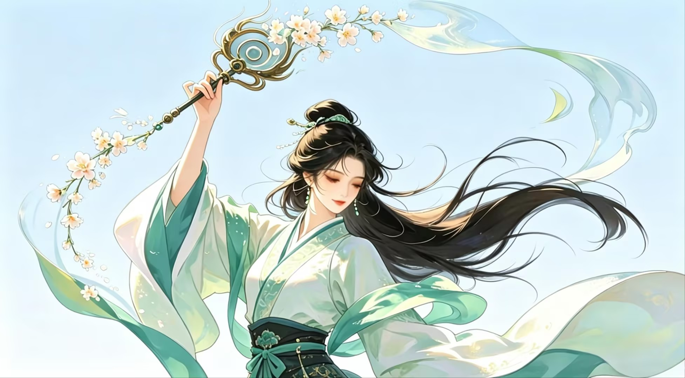
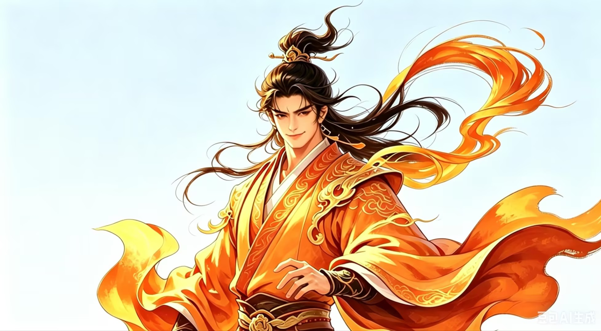
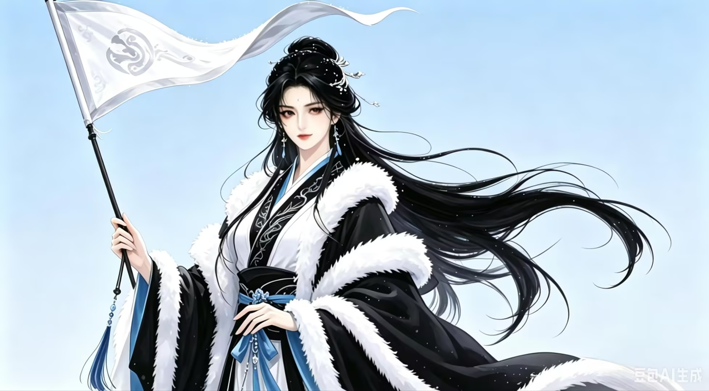

风神析
析的本义为分开、劈开，对应春季的草木破土萌发。处于东方的析神召唤出的协风寓意协同万物生长、催生万物生机。

风神因
因的本义为依靠、安居，对应夏季万物盛长的状态。处于南方的因神召唤出的飘风代表着湿意温润的南风，滋润作物生长。
风神𣐺
𣐺的本义为平定、收敛，对应秋季万物成熟收敛的物候特征。处于西方的神召唤出彝风，宣告进入作物收割、万物收藏的阶段。

风神夗
本义为蛰伏、闭合，对应冬季万物闭藏的状态。处于北方的夗神召唤出的冽风对应着寒冷刺骨的北风和冬季最明显的气候特征。
